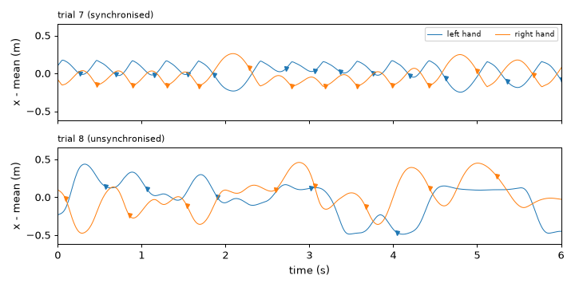
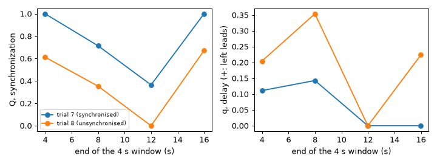
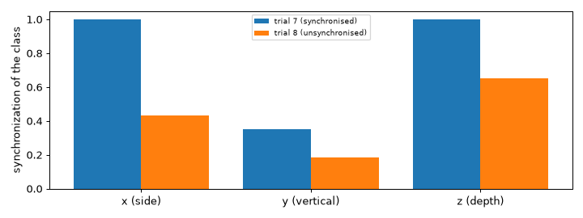
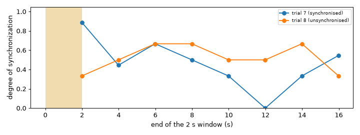
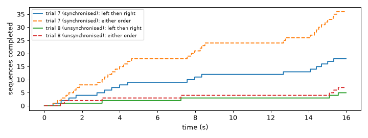
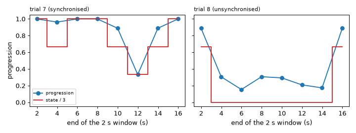

Note
Go to the end to download the full example code.
Synchronization of events#
Often what is shared between two people is a set of moments, not a continuous curve: the instants of a clap, of a step, of a change of direction. This second tutorial on synchronization turns the movement of two hands into trains of events and measures how far the events of one train meet those of the other, with and without a chosen tolerance. It also counts a given order of events and follows a staged process in which several measures are reached one after the other.
- Goals:
extract events from a movement with a peak detector; measure event synchronization (two trains, several event classes, spike trains in two forms); detect an ordered sequence of events; follow the progression of staged synchronization.
- Prerequisites:
Synchronization of continuous signals and Analysis primitives: complexity, rarity, periodicity (the peak detector).
- Data:
trials 7 (clapping hands, synchronised) and 8 (unsynchronised), seconds 5 to 21 of the example session.
- Time:
about 25 minutes.
From movement to events#
In the clapping task both hands swing horizontally (the x axis of the recordings) towards and away from each other. In
trial 7 the claps are synchronised, in trial 8 they are not. We turn each hand into an event train: a series with one
value per sample, where a non-zero value is an event. The events are the maxima of each swing, found online with
ScalarPeakDetector on the position of the hand around its mean, in metres, with a
buffer of 0.4 s (40 samples) and a swing of at least 5 cm. A peak is reported when the buffer already holds the samples that
follow it, so the markers come up to a few tenths of a second after the maximum. Time is in seconds; tau and the windows below are in samples
(100 per second).
import matplotlib.pyplot as plt
import numpy as np
from helpers import shade_status
from pyeyesweb.analysis_primitives import ScalarPeakDetector
from pyeyesweb.datasets import load_qualisys_trial
trials = {"trial 7 (synchronised)": 7, "trial 8 (unsynchronised)": 8}
positions, trains = {}, {}
for name, number in trials.items():
trial = load_qualisys_trial(number, start=5, stop=21).to_units("m")
hands = {side: trial.joint(f"{side}_Hand") for side in ("Left", "Right")}
positions[name] = hands
# one train per hand and per axis: (samples, 3)
trains[name] = {
side: np.column_stack([
ScalarPeakDetector(window=40, threshold=limit).run(hands[side][:, axis] - hands[side][:, axis].mean()).is_peak.astype(float)
for axis, limit in enumerate((0.05, 0.02, 0.03))
])
for side in hands
}
stamps = trial.timestamps
sampling_rate = trial.sampling_rate
print("events of the left and right hand along x:", {name: (int(t["Left"][:, 0].sum()), int(t["Right"][:, 0].sum())) for name, t in trains.items()})
fig, axes = plt.subplots(2, 1, figsize=(8, 4), sharex=True, sharey=True)
for ax, name in zip(axes, trials):
for side, color in (("Left", "C0"), ("Right", "C1")):
x = positions[name][side][:, 0]
events = np.flatnonzero(trains[name][side][:, 0])
ax.plot(stamps, x - x.mean(), color=color, lw=0.8, label=f"{side.lower()} hand")
ax.plot(stamps[events], (x - x.mean())[events], "v", color=color, ms=4)
ax.set_xlim(stamps[0], stamps[0] + 6)
ax.set_ylabel("x - mean (m)")
ax.set_title(name, fontsize=9, loc="left")
axes[0].legend(fontsize=7, ncol=2)
axes[-1].set_xlabel("time (s)")
fig.tight_layout()

events of the left and right hand along x: {'trial 7 (synchronised)': (30, 30), 'trial 8 (unsynchronised)': (13, 20)}
Takeaway. An event train is a series with a non-zero value at each event; the peak detector makes one from a movement.
Event synchronization: do the events of one hand have a partner?#
EventSynchronization looks, for each event of one train, for an event of the other
within tau samples. synchronization (Q) is 1 when every event has a partner and 0 when none has; delay (q)
is positive when the first train leads and negative when the second does. Because it accumulates events, consecutive
windows may not overlap (hop is the window); reset_every_buffer=True makes every window independent. We use windows
of 4 s (400 samples) and tau=30 (0.3 s).
from pyeyesweb.analysis_primitives import EventSynchronization
fig, axes = plt.subplots(1, 2, figsize=(8, 3))
for name in trials:
left, right = trains[name]["Left"][:, 0], trains[name]["Right"][:, 0]
recorder = EventSynchronization(window=400, tau=30, reset_every_buffer=True).run(left, right, timestamps=stamps)
index = np.flatnonzero(recorder.ok)
axes[0].plot(recorder.timestamps[index], recorder.synchronization[index], "o-", label=name)
axes[1].plot(recorder.timestamps[index], recorder.delay[index], "o-", label=name)
print(f"{name:<26} Q per window: {np.round(recorder.synchronization[index], 2)}")
axes[0].set_ylabel("Q, synchronization")
axes[1].set_ylabel("q, delay (+: left leads)")
for ax in axes:
ax.set_xlabel("end of the 4 s window (s)")
axes[0].legend(fontsize=7)
fig.tight_layout()

trial 7 (synchronised) Q per window: [1. 0.71 0.37 1. ]
trial 8 (unsynchronised) Q per window: [0.61 0.35 0. 0.67]
The only parameter that defines “at the same time” is tau. The same recordings over the whole 16 s with three
tolerances:
for tau in (5, 15, 30):
values = [float(EventSynchronization(window=1600, tau=tau).run(trains[name]["Left"][:, 0], trains[name]["Right"][:, 0])[-1].synchronization) for name in trials]
print(f"tau = {tau:>2} samples ({tau / sampling_rate:.2f} s): Q = {values[0]:.2f} (trial 7), {values[1]:.2f} (trial 8)")
tau = 5 samples (0.05 s): Q = 0.03 (trial 7), 0.12 (trial 8)
tau = 15 samples (0.15 s): Q = 0.43 (trial 7), 0.12 (trial 8)
tau = 30 samples (0.30 s): Q = 1.00 (trial 7), 0.43 (trial 8)
Takeaway. Q is the share of events that have a partner within tau; choose tau in samples to say how close “together”
is.
Several kinds of events: MECS#
A gesture can have several kinds of events. EventSynchronizationMECS takes one series
per participant, each with one channel per event class, and returns for each class the synchronization of the
series and the number of events. Here there are two participants (the hands) and three classes, the swings along
x, along the vertical y and along the depth z. It accumulates over windows, so we give it one window for the whole
recording.
from pyeyesweb.analysis_primitives import EventSynchronizationMECS
classes = ["x (side)", "y (vertical)", "z (depth)"]
mecs = {}
for name in trials:
mecs[name] = EventSynchronizationMECS(window=1600, tau=30, number_of_event_classes=3).run(
trains[name]["Left"], trains[name]["Right"], timestamps=stamps)[-1]
print(f"{name:<26} synchronization per class {np.round(mecs[name].synchronization, 2)}, events {mecs[name].events.astype(int)}")
fig, ax = plt.subplots(figsize=(8, 3))
for offset, name in zip((-0.2, 0.2), trials):
ax.bar(np.arange(3) + offset, mecs[name].synchronization, width=0.4, label=name)
ax.set_xticks(range(3), classes)
ax.set_ylabel("synchronization of the class")
ax.legend(fontsize=7)
fig.tight_layout()

trial 7 (synchronised) synchronization per class [1. 0.35 1. ], events [60 9 22]
trial 8 (unsynchronised) synchronization per class [0.43 0.18 0.65], events [33 22 35]
The kernel ("uniform", "linear" or "gaussian") sets how a coincidence is weighted by its lag.
Takeaway. MECS gives one synchronization per class of events, for any number of participants.
Spike trains: no tolerance to choose#
SpikeSynchronization (SPIKE-synchronization) decides what is simultaneous from the local
spacing of the events, so it has no tau. degree is the share of events that have a partner in another train and
distance is 1 - degree. It takes the trains in two forms. In mode="binary" (the default) each sample has one
channel per train, as above; here windows of 2 s.
from pyeyesweb.analysis_primitives import SpikeSynchronization
fig, ax = plt.subplots(figsize=(8, 3))
for name in trials:
pair = np.column_stack([trains[name]["Left"][:, 0], trains[name]["Right"][:, 0]])
recorder = SpikeSynchronization(window=200, hop=200).run(pair, timestamps=stamps)
index = np.flatnonzero(recorder.ok)
ax.plot(recorder.timestamps[index], recorder.degree[index], "o-", label=name)
shade_status(ax, stamps, recorder.status, codes=(1,))
ax.set_xlabel("end of the 2 s window (s)")
ax.set_ylabel("degree of synchronization")
ax.set_ylim(0, 1.05)
ax.legend(fontsize=7)
fig.tight_layout()

In mode="timings" you give the spike times themselves, as a matrix with one row per train
(number_of_inputs, window); the times are positive and increasing, in any unit, and every train has the same number of
spikes (window). Each call is independent and always OK. Here the times, in seconds, of the first eight events of
each hand.
spike_times = {}
for name in trials:
times = [(np.flatnonzero(trains[name][side][:, 0]) + 1) / sampling_rate for side in ("Left", "Right")]
spike_times[name] = np.array([train[:8] for train in times])
result = SpikeSynchronization(window=8, mode="timings").process(spike_times[name])
print(f"{name:<26} spike times (s), left hand: {spike_times[name][0].round(2)}")
print(f"{'':<26} degree {float(result.degree):.2f}, distance {float(result.distance):.2f}")
trial 7 (synchronised) spike times (s), left hand: [0.27 0.7 1.16 1.56 1.87 2.73 3.07 3.38]
degree 0.75, distance 0.25
trial 8 (unsynchronised) spike times (s), left hand: [0.58 1.07 1.91 3.03 4.05 7.24 9.2 9.88]
degree 0.25, distance 0.75
Takeaway. SPIKE-synchronization needs no tolerance, either from sampled trains (binary) or from spike times (timings).
Sequences of events#
Sometimes the question is the order of events: does the left hand move and then the right hand answers?
SequenceDetector gets one integer per sample, the id of the event that happens (0 for
none), and counts how many times the ids of sequence follow each other with at most inter_event_time samples between
two of them. We code a left-hand event as 1 and a right-hand event as 2 (3 if both fall on the same sample, which belongs to
no sequence) and count “1 then 2” within 0.3 s; with any_order=True also “2 then 1”.
from pyeyesweb.analysis_primitives import SequenceDetector
fig, ax = plt.subplots(figsize=(8, 3))
for name in trials:
ids = (trains[name]["Left"][:, 0] + 2 * trains[name]["Right"][:, 0]).astype(int)
ordered = SequenceDetector(sequence="1 2", inter_event_time=30).run(ids, timestamps=stamps)
either = SequenceDetector(sequence="1 2", inter_event_time=30, any_order=True).run(ids)
ax.step(stamps, ordered.sequence_count, where="post", label=f"{name}: left then right")
ax.step(stamps, either.sequence_count, where="post", ls="--", label=f"{name}: either order")
print(f"{name:<26} left then right: {int(ordered.sequence_count[-1])}, either order: {int(either.sequence_count[-1])}")
ax.set_xlabel("time (s)")
ax.set_ylabel("sequences completed")
ax.legend(fontsize=7)
fig.tight_layout()

trial 7 (synchronised) left then right: 18, either order: 36
trial 8 (unsynchronised) left then right: 5, either order: 7
Takeaway. The detector counts an ordered pattern of event ids within a time limit, in a live stream.
Staged synchronization#
When the members of a group synchronize one after the other, the interest is how far the process has got.
TemporalSynchronization takes, at each step, number_of_inputs synchronization values
(the stages), compares each with a threshold and returns the state (how many leading stages are reached), the
progression from 0 to 1, the step and, once everything is reached, the efficiency_step (see
Synchronization). Here three stages are computed over successive 2 s windows of the clapping trials, each one
harder to reach than the last: the phase locking value of the two hands (reached when it is above 0.8), the event
synchronization Q (above 0.5) and the spike degree (above 0.5).
from pyeyesweb.analysis_primitives import PhaseLockingValue, TemporalSynchronization
fig, axes = plt.subplots(1, 2, figsize=(8, 3), sharey=True)
for ax, name in zip(axes, trials):
left, right = positions[name]["Left"][:, 0], positions[name]["Right"][:, 0]
plv = PhaseLockingValue(window=200, hop=200).run(left, right)
q = EventSynchronization(window=200, tau=30, reset_every_buffer=True).run(trains[name]["Left"][:, 0], trains[name]["Right"][:, 0])
degree = SpikeSynchronization(window=200, hop=200).run(np.column_stack([trains[name]["Left"][:, 0], trains[name]["Right"][:, 0]]))
stages = np.column_stack([plv.phase_locking_value[plv.ok], q.synchronization[q.ok], degree.degree[degree.ok]])
progress = TemporalSynchronization(thresholds=[0.8, 0.5, 0.5]).run(stages)
ax.plot(stamps[plv.ok], progress.progression, "o-", label="progression")
ax.step(stamps[plv.ok], progress.state / 3, where="mid", color="C3", label="state / 3")
ax.set_title(name, fontsize=9, loc="left")
ax.set_xlabel("end of the 2 s window (s)")
print(f"{name:<26} states over the windows: {progress.state.astype(int)}")
axes[0].set_ylabel("progression")
axes[0].legend(fontsize=7)
fig.tight_layout()

trial 7 (synchronised) states over the windows: [3 2 3 3 2 1 2 3]
trial 8 (unsynchronised) states over the windows: [2 0 0 0 0 0 0 2]
The synchronised pair reaches the later stages in some windows, the other stays at state 0 in most windows. In a group the stages would be, for example, the phase locking value of each member with the previous one.
Takeaway. The state counts the stages reached in order and the progression says how far the whole process has come.
Try it#
Use
EventSynchronization(window=1600, tau=30, weighted=True)on the two trials. Does the weighting, which lowers the weight of a pair as its lag grows, lower Q? In which trial more?Count how many times the right hand answers the left within 0.1 s (
inter_event_time=10) in each trial.Use
SpikeSynchronizationin"timings"mode with the first 8 events of the left hand against the first 8 of the left hand shifted by 0.05 s. What degree do you expect?
Solutions#
Exercise 1. A weighted pair counts less than 1 unless the lag is one sample.
for name in trials:
left, right = trains[name]["Left"][:, 0], trains[name]["Right"][:, 0]
plain = float(EventSynchronization(window=1600, tau=30).run(left, right)[-1].synchronization)
weighted = float(EventSynchronization(window=1600, tau=30, weighted=True).run(left, right)[-1].synchronization)
print(f"{name:<26} Q = {plain:.2f}, weighted Q = {weighted:.2f}")
trial 7 (synchronised) Q = 1.00, weighted Q = 0.53
trial 8 (unsynchronised) Q = 0.43, weighted Q = 0.19
Exercise 2. The same detector with a shorter limit.
trial 7 (synchronised) left then right within 0.1 s: 4
trial 8 (unsynchronised) left then right within 0.1 s: 2
Exercise 3. A train against a shifted copy of itself: every spike has a partner.
shifted = np.array([spike_times["trial 7 (synchronised)"][0], spike_times["trial 7 (synchronised)"][0] + 0.05])
print("degree:", float(SpikeSynchronization(window=8, mode="timings").process(shifted).degree))
degree: 1.0
Next steps#
Synchronization: the definitions of every measure and how to choose one.
Analysis primitives: every parameter of these features.
Capstone: a pipeline: a real-time loop and a batch analysis that combine features of several layers.